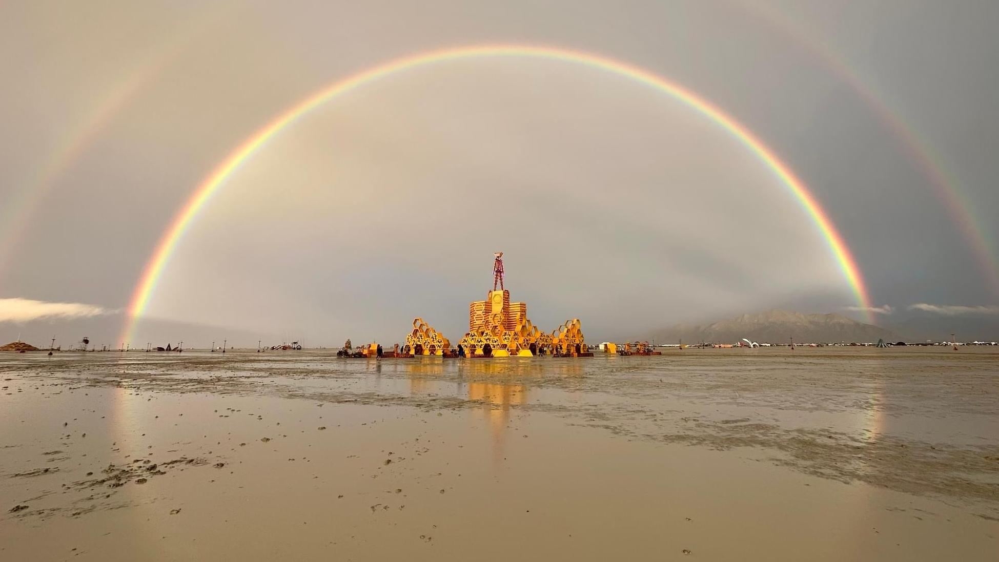

Arcus 42 · Global Family Office
让代际财富服务人类文明的福祉
Arcus42 由多个家族共同创立，致力于连接世界不同家族、产业与人才，并带来家族价值的长远发展，与人类福祉的同频共振。
关于 Arcus 42
Arcus42 深信
“财富只是创造价值的副产品”
Arcus42 由多个家族共同创立，致力于连接世界不同家族、产业与人才，并带来家族价值的长远发展，与人类福祉的同频共振。
我们的愿景，是与家族携手成为具备全球视野、跨越世代的参与者与贡献者。
在瞬息万变的时代，机遇与挑战并存：经济与政治不确定性上升，税负与监管趋严，隐私空间收缩，公众也对家族承担社会责任寄予更高期望。与日常资产运作相比，厘清财富使命并确保其跨世代延续，是深远且复杂的课题。
Arcus42 深信“财富只是创造价值的副产品”。因此，我们的服务边界由客户需求而定，早已超越传统资产管理：从长期战略规划与全球资产配置，到企业治理、家族教育、公益影响与日常行政支持，再到供应链优化、家族伙伴对接等桥梁服务，覆盖家族传承的完整链条，致力于为客户与社会持续创造深远价值。

家族精神的承载者，是一切决策的起点与归宿。
具备远见、品格与魄力的家族成员，将引领家族穿越时代变迁。
Arcus 42
我们的视角
我们将家族传承视作一个动态三角
家族事业
家族理念实践的舞台、成员历练的道场。
事业既承载文化传承，更在赋能成员，
同时不断拓展家族影响力与社会贡献。
家族成员
家族精神的承载者，是一切决策的起点与归宿。
唯有人才兼具远见卓识、坚韧品格与创新魄力，
才能带领家族穿越经济周期、科技与社会变革。
家族财富
财富的价值，不在于数字的攀升，
在于更高尚的愿景：为成员提供沃土，
为事业注入动力，最终反哺社会。
在每一个决策中，看见并守护「人」的长远价值与社会福祉。
Arcus 42
服务范围
我们的服务
资产配置
- 传统金融资产配置
- 新型资产投资管理
- 艺术品收藏与投资
保险顾问
- 保险配置
- 保单规划
- 保单融资
家族治理与教育
- 升学教育规划
- 传承教育规划
- 传承职业规划
- 家族治理咨询
财富规划
- 身份规划
- 税务规划
- 家事法律咨询
- 信托架构设计
家族影响力管理
- 公益慈善
- 声望管理
健康管理
- 家族健康系统
- 全球医疗资源
我们的角色
A · R · C
守护超越答案的永恒之问，构筑一条承载家族与文明前行的长弧。
Architect构筑者
财富历久弥新的构筑者
以清晰的蓝图贯通税务、法律、投资与慈善等要素，打造历久弥新且稳固的体系，以确保家族资产在市场波动与成员更迭中，始终得以平稳传承。
Reflective Ally同盟者
在每一个关键时刻反思的盟友
在关键时刻与家族并肩，以透明和共情为根基，通过不断提问，持续校准，确保每一次决策都契合家族价值观与长期主义精神，杜绝短视与僵化。
Connector连接者
将洞见化为行动的跨领域连接者
跨越多代成员与全球网络，整合多方力量，促成家族与企业、慈善、投资伙伴之间的高效协同。连接者不只是桥梁，更是把想法变为行动的催化剂。
我们的名字
“生命、宇宙及一切的终极答案”
我们将 42 作为名字的一部分，象征对家族传承本质的持续提问与思考。

答案终将过时，真正的价值，
在于不断探问背后的勇气与智慧。
Arcus 42
工作方式
我们与客户的关系始于提问
校准真实需求
家族常带来如投资、信托、收益、股权等“症状”，我们以提问还原问题本质，挖掘隐藏在背后的代际关系与价值冲突。
开放认知边界
以谦卑之心承认世界与技术的演进、知识的边界，用持续提问替代自满，让资产配置与治理架构与时俱进。
建立共创机制
真正可持续的家族传承，不是单向的“方案告知”，提问让家族由被动接受者转为并肩共创的合伙人，为治理机制注入自驱动力。
服务流程
客户旅程
倾听・提问・诊断
- FST 快速评估
- Arcus42 意见
- 家族愿景访谈纪要
共创・建模・校准
- IPS (Investment Policy Statement)
- 治理草案
- 财富规划意见书
整合・授权・执行
- 信托
- SPV
- 资产架构
- 资产配置清单
复盘・优化・共振
- 季度 Q&A 报告
- 年度 IMP & 绩效回顾
服务生态
我们的资源网络与合规
FAMILyS
- 200+单一家族办公室
- 1000+家族成员网络
- 多家族共投机制
- 联合案例库
专业顾问
- 30+顶级律所 / 律师团队
- 12+私人银行
- 10+税务顾问团队
- 12+教育咨询
- 10+慈善顾问
- 3+健康管理机构
合规与风控
- 家族利益监督委员会
- 合规与风控部门
- 合规风控外部顾问
- 年度外部审计
China Desk & Global Bridge Desk
海外家族进中国，中国家族走向全球，都有长弧相伴。
全球家族联盟经验共创，构建深度服务生态
自建合规与尽调审查机制，持续扩展优质供应商库，每一项服务商的入库，皆出自买方立场、真实使用与长期合作反馈，以系统性协同代替零散对接，以真实反馈匹配核心需求，构建可信的家族服务生态。
联系我们